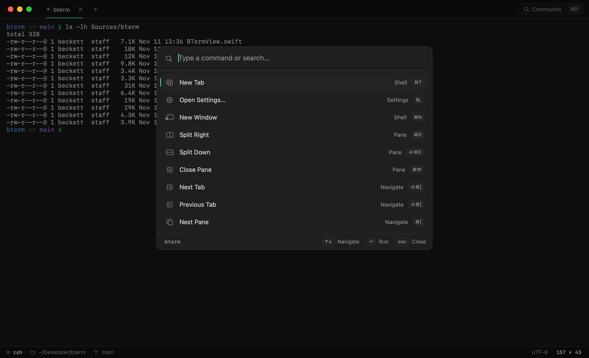
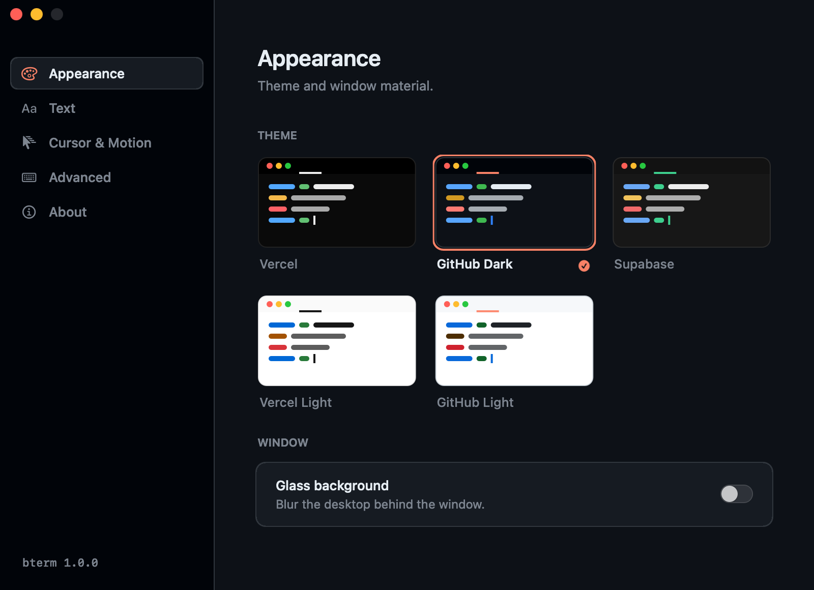

A small, fast terminal for the Mac. Native AppKit, under 5 MB, with tabs, splits and a command palette.

- App size
- 4.7 MBuniversal, 2.6 MB to download
- Memory
- 40 MBone window, idle
- Built with
- AppKitno Electron, no web view
- Emulation
- xterm256 colour, truecolor, Kitty, Sixel
What it does
Everything you'd expect from a terminal, and a few small things that make it nicer to sit in all day.


- Emulation
Full xterm emulation through SwiftTerm. vim, htop and tmux run on the alternate screen, with mouse reporting, bracketed paste, OSC 8 links, the Kitty keyboard protocol, inline images and wide characters.
- Tabs and splits
New tabs and windows open in the folder you're in. Split right or down as many times as you like, move between panes with the arrow keys, and drag tabs to reorder them.
- Status bar
The running process, the folder and the git branch, read straight from the kernel. There's no shell integration to install.
- Drag and drop
Drop a file on a pane to paste its escaped path. Drop a folder on the Dock icon to open a window there.
- Fonts
Any installed monospace font, from SF Mono to Geist Mono, JetBrains Mono, Berkeley Mono and Fira Code, with a live preview.
- GPU renderer
An optional Metal renderer for very heavy output. It's off by default, because the cursor can't glide when Metal draws it.
Motion
Small animations, there to show you where things went. They step aside when output floods in, and line slide-in and cursor glide each have a switch in Settings.
- New lines
- When output scrolls, each new line slides up from below. It switches itself off for floods like
cat, builds andyes, and inside full-screen apps. - Cursor
- Glides between cells and fades as it blinks.
- Tabs
- Grow in and collapse out. The underline slides between tabs, and switching slides the content in from the side you came from.
- Panes
- New splits rise in and unfocused panes dim. The bell flashes the pane's border.
- Status
- A dot pulses while a command runs. Background tabs with new output get a small blue dot.
- Resizing
- A
cols × rowsreadout sits in the middle of the window while you drag.
Shortcuts
The ones you already know from Terminal and iTerm, plus a palette for the rest.
- ⌘P
- Command palette
- ⌘,
- Settings
- ⌘T / ⌘N
- New tab / window
- ⌘D / ⇧⌘D
- Split right / down
- ⌘W
- Close pane
- ⌥⌘←→↑↓
- Move between panes
- ⇧⌘[ ]
- Previous / next tab
- ⌘1…9
- Jump to a tab
- ⌘K
- Clear the buffer
- ⌘F
- Find
- ⌘+ − 0
- Font size
- ⌘ click
- Open a link
Install
One universal build for Apple silicon and Intel Macs on macOS 13 Ventura or later.
From the tap
Updates come with brew upgrade.
Build it yourself
Needs Xcode 16 or newer.
First launch bterm isn't notarized by Apple yet, so the first time you open the download, macOS may say it can't check it. Open System Settings → Privacy & Security and click Open Anyway. Homebrew takes care of this for you.